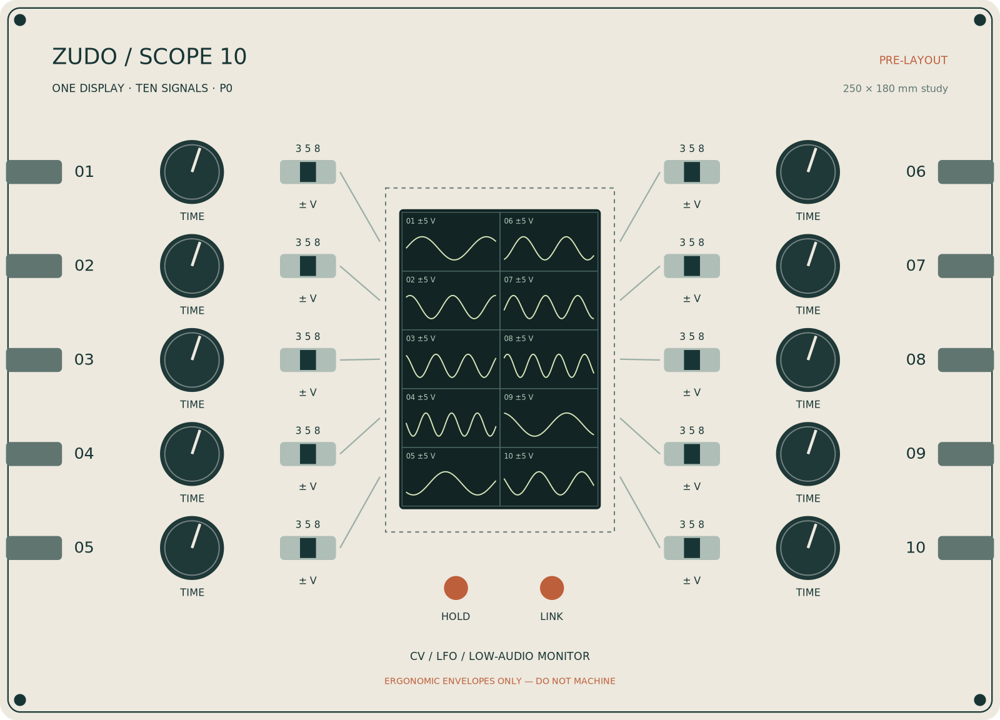

A factory-soldered first carrier for CV, LFO and low-audio waveform monitoring.
PRE-LAYOUT — NOT FOR FABRICATION. Native schematic drafts and an outline-only PCB are included. Display power/driver integration, exact footprints and hardware tests remain open.
